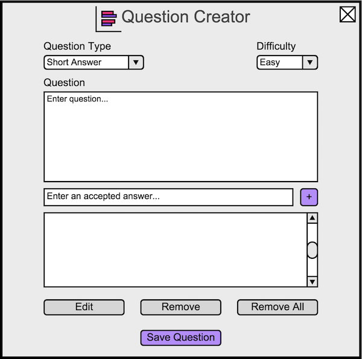
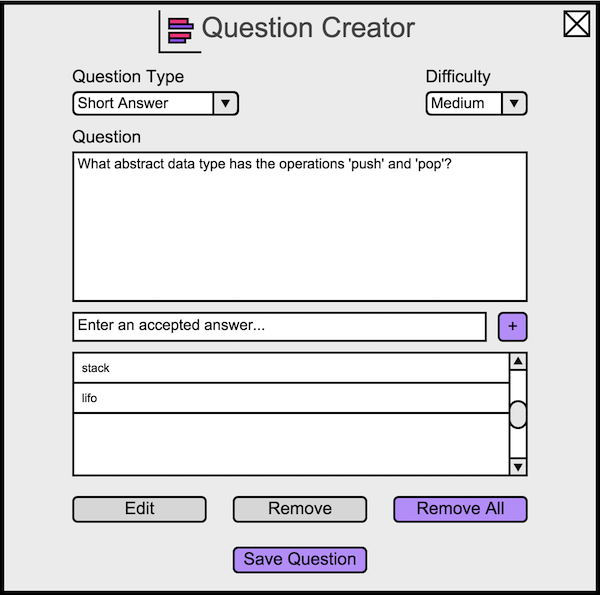
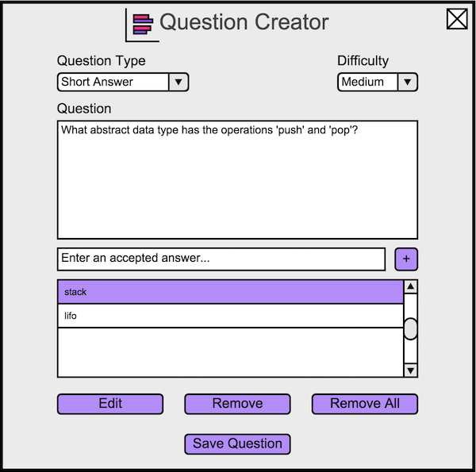

2.4.4. Creating a Short Answer Question
To create a short answer question, the instructor opens the question creator dialog, and then changes the question type to Short Answer.
The instructor sees Figure 9.

Figure 9: Default short answer view.
For a short answer type question, the instructor adds the answers that he wants to be considered correct. The instructor enters the answer
in the 'Enter an accepted answer...' input box. The instructor selects the '+' icon to add it to the list below the input box.
An example of a typical short answer question is shown in Figure 10.

Figure 10: A question about stacks.
The instructor removes all current answers to the question by selecting the 'Remove all' button below the list of answers.
When the instructor selects an item on the list of answers, that answer is highlighted and more options are available. This is shown in
Figure 11.

Figure 11: The instructor selects an answer.
The instructor selects 'Edit' to change the existing answer. The instructor chooses 'Remove' to only remove the selected answer.
Prev: multiple response
| Next: programming
| Up: create question
| Top: index